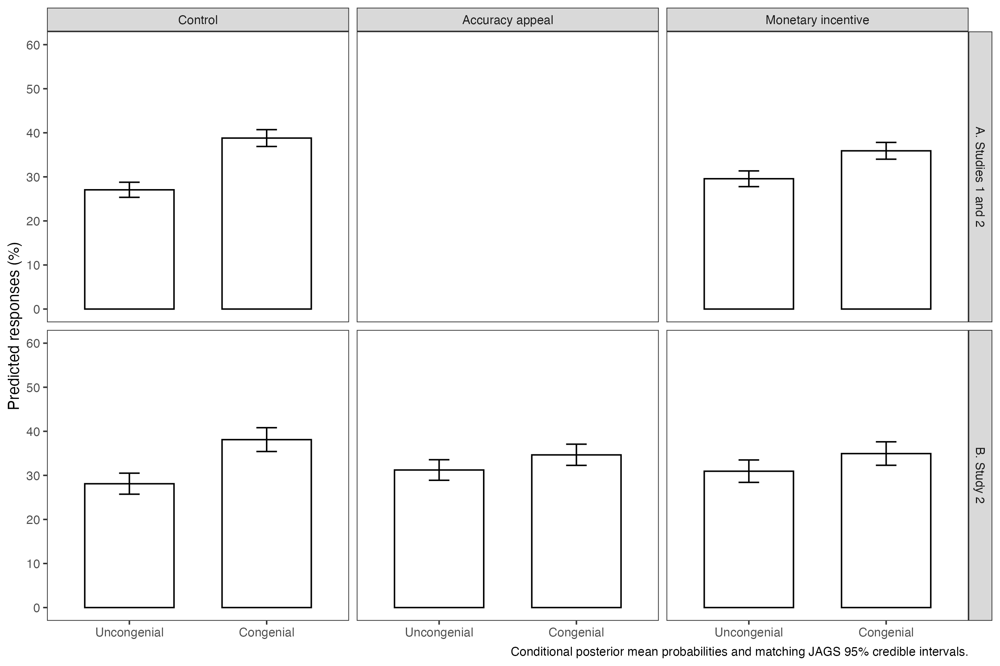

Prior, Sood, and Khanna (2015). Published coding and item selection are retained.
This report shows numerical reproduction and diagnostics. See the source audit for missing upstream inputs and interpretation limits. Different random streams produce different bootstrap and MCMC draws; deterministic counts are compared exactly.
| study | statistic | estimate_se_pct |
|---|---|---|
| pooled | group_0_uncongenial | 28.1 (1.0) |
| pooled | group_0_correct | 32.3 (1.2) |
| pooled | group_0_congenial | 39.6 (1.1) |
| pooled | group_0_bias | 11.5 (1.7) |
| pooled | group_1_uncongenial | 28.7 (1.0) |
| pooled | group_1_correct | 36.5 (1.2) |
| pooled | group_1_congenial | 34.8 (1.2) |
| pooled | group_1_bias | 6.1 (1.8) |
| pooled | contrast_1_uncongenial | 0.6 (1.4) |
| pooled | contrast_1_correct | 4.2 (1.7) |
| pooled | contrast_1_congenial | -4.8 (1.6) |
| pooled | contrast_1_bias | -5.4 (2.5) |
| study_2004 | group_0_uncongenial | 27.8 (1.3) |
| study_2004 | group_0_correct | 31.5 (1.8) |
| study_2004 | group_0_congenial | 40.7 (1.6) |
| study_2004 | group_0_bias | 12.9 (2.3) |
| study_2004 | group_1_uncongenial | 27.3 (1.4) |
| study_2004 | group_1_correct | 37.2 (1.8) |
| study_2004 | group_1_congenial | 35.4 (1.7) |
| study_2004 | group_1_bias | 8.1 (2.5) |
| study_2004 | contrast_1_uncongenial | -0.5 (1.9) |
| study_2004 | contrast_1_correct | 5.7 (2.5) |
| study_2004 | contrast_1_congenial | -5.2 (2.4) |
| study_2004 | contrast_1_bias | -4.8 (3.5) |
| study_2008 | group_0_uncongenial | 28.4 (1.4) |
| study_2008 | group_0_correct | 33.2 (1.5) |
| study_2008 | group_0_congenial | 38.3 (1.5) |
| study_2008 | group_0_bias | 9.9 (2.6) |
| study_2008 | group_1_uncongenial | 31.6 (1.3) |
| study_2008 | group_1_correct | 33.5 (1.4) |
| study_2008 | group_1_congenial | 34.9 (1.4) |
| study_2008 | group_1_bias | 3.4 (2.3) |
| study_2008 | group_2_uncongenial | 30.3 (1.5) |
| study_2008 | group_2_correct | 35.7 (1.7) |
| study_2008 | group_2_congenial | 34.1 (1.7) |
| study_2008 | group_2_bias | 3.8 (2.6) |
| study_2008 | contrast_1_uncongenial | 3.2 (2.1) |
| study_2008 | contrast_1_correct | 0.2 (2.2) |
| study_2008 | contrast_1_congenial | -3.4 (2.0) |
| study_2008 | contrast_1_bias | -6.6 (3.5) |
| study_2008 | contrast_2_uncongenial | 1.8 (2.1) |
| study_2008 | contrast_2_correct | 2.4 (2.4) |
| study_2008 | contrast_2_congenial | -4.3 (2.2) |
| study_2008 | contrast_2_bias | -6.1 (3.6) |
| quantity | 1 | 2a | 2b | 3a | 3b |
|---|---|---|---|---|---|
| Monetary incentive (pooled studies) | -0.13 (0.06) | — | — | — | — |
| Monetary incentive | — | -0.14 (0.09) | — | -0.21 (0.10) | — |
| Accuracy appeal | — | -0.15 (0.08) | — | -0.17 (0.10) | — |
| Accuracy incentive | — | — | -0.15 (0.07) | — | -0.19 (0.08) |
| Random-intercept variance | 0.07 (0.04) | 0.06 (0.04) | 0.06 (0.04) | 0.11 (0.05) | 0.11 (0.05) |
| Responses | 4324 | 3276 | 3276 | 2614 | 2614 |
| Respondents | 878 | 660 | 660 | 525 | 525 |
| Log likelihood | -4685 | -3579 | -3579 | -2815 | -2815 |
| quantity | 1 | 2 |
|---|---|---|
| Monetary incentive | -0.14 (0.08) | — |
| Accuracy appeal | -0.15 (0.08) | — |
| Accuracy incentive | — | -0.15 (0.07) |
| Bush reference | 0.12 (0.09) | 0.12 (0.09) |
| Monetary x Bush | 0.06 (0.12) | — |
| Appeal x Bush | 0.09 (0.12) | — |
| Incentive x Bush | — | 0.08 (0.10) |
| Random-intercept variance | 0.03 (0.02) | 0.03 (0.02) |
| Responses | 6233 | 6233 |
| Respondents | 1260 | 1260 |
| Log likelihood | -6766 | -6766 |
| quantity | correct | uncongenial |
|---|---|---|
| Accuracy incentive | -0.20 (0.17) | -0.21 (0.16) |
| Political knowledge | 0.10 (0.02) | -0.05 (0.02) |
| Incentive x knowledge | 0.04 (0.02) | 0.05 (0.02) |
| Shared random-intercept variance | 0.09 (0.04) | — |
| Responses | 6233 | — |
| Respondents | 1260 | — |
| Log likelihood | -6510 | — |
| quantity | Unrestricted | 60 seconds | 45 seconds | 40 seconds | 35 seconds |
|---|---|---|---|---|---|
| Monetary incentive | -0.14 (0.09) | -0.15 (0.09) | -0.14 (0.09) | -0.18 (0.10) | -0.18 (0.10) |
| Accuracy appeal | -0.15 (0.08) | -0.14 (0.08) | -0.13 (0.09) | -0.15 (0.09) | -0.12 (0.09) |
| Random-intercept variance | 0.06 (0.04) | 0.06 (0.04) | 0.06 (0.04) | 0.09 (0.05) | 0.09 (0.05) |
| Responses | 3276 | 3085 | 2863 | 2662 | 2395 |
| Respondents | 660 | 658 | 655 | 649 | 636 |
| Log likelihood | -3579 | -3371 | -3130 | -2908 | -2616 |
| quantity | 1 | 2 | 3 | 4 | 5 | 6 | 7 | 8 | 9 |
|---|---|---|---|---|---|---|---|---|---|
| Monetary incentive (pooled studies) | -0.10 (0.06) | -0.10 (0.06) | -0.14 (0.06) | — | — | — | — | — | — |
| Monetary incentive | — | — | — | -0.08 (0.09) | -0.06 (0.08) | -0.13 (0.09) | -0.13 (0.10) | -0.12 (0.10) | -0.19 (0.10) |
| Accuracy appeal | — | — | — | -0.13 (0.08) | -0.17 (0.08) | -0.16 (0.08) | -0.14 (0.10) | -0.19 (0.09) | -0.16 (0.09) |
| Random-intercept variance | 0.09 (0.04) | 0.08 (0.04) | 0.08 (0.04) | 0.06 (0.04) | 0.03 (0.03) | 0.06 (0.04) | 0.11 (0.05) | 0.05 (0.04) | 0.09 (0.05) |
| Responses | 4324 | 4324 | 4324 | 3276 | 3276 | 3276 | 2614 | 2614 | 2614 |
| Respondents | 878 | 878 | 878 | 660 | 660 | 660 | 525 | 525 | 525 |
| Log likelihood | -4667 | -4671 | -4653 | -3575 | -3537 | -3552 | -2804 | -2770 | -2787 |
| item | term | coefficient_se | observations |
|---|---|---|---|
| Debt 2008 | mon | -0.17 (0.19) | 654 |
| Debt 2008 | app | -0.45 (0.18) | 654 |
| Unemployment 2008 | mon | -0.11 (0.18) | 656 |
| Unemployment 2008 | app | -0.15 (0.17) | 656 |
| Uninsured 2008 | mon | -0.21 (0.18) | 654 |
| Uninsured 2008 | app | -0.13 (0.17) | 654 |
| Estate Tax 2008 | mon | 0.16 (0.18) | 657 |
| Estate Tax 2008 | app | 0.02 (0.18) | 657 |
| Gas Price 2008 | mon | -0.34 (0.18) | 655 |
| Gas Price 2008 | app | 0.00 (0.17) | 655 |
| Unemployment 2004 | pay | -0.22 (0.17) | 460 |
| Estate Tax 2004 | pay | 0.11 (0.17) | 462 |
| Debt 2004 | pay | -0.37 (0.18) | 433 |
| Uninsured 2004 | pay | -0.08 (0.17) | 451 |
| Poverty 2004 | pay | -0.01 (0.17) | 461 |
| model | term | published_estimate | published_se | estimate | standard_error | estimate_matches | se_matches |
|---|---|---|---|---|---|---|---|
| table_2_1 | pay | -0.13 | 0.06 | -0.127710 | 0.059306 | TRUE | TRUE |
| table_2_2a | app | -0.15 | 0.08 | -0.150870 | 0.081473 | TRUE | TRUE |
| table_2_2a | mon | -0.14 | 0.09 | -0.139710 | 0.085243 | TRUE | TRUE |
| table_2_2b | acc | -0.15 | 0.07 | -0.145800 | 0.072391 | TRUE | TRUE |
| table_2_3a | app | -0.17 | 0.10 | -0.171540 | 0.095393 | TRUE | TRUE |
| table_2_3a | mon | -0.21 | 0.10 | -0.213120 | 0.098868 | TRUE | TRUE |
| table_2_3b | acc | -0.19 | 0.08 | -0.190790 | 0.084598 | TRUE | TRUE |
| table_3_1 | app | -0.15 | 0.08 | -0.149980 | 0.079533 | TRUE | TRUE |
| table_3_1 | appxbush | 0.09 | 0.12 | 0.091956 | 0.118100 | TRUE | TRUE |
| table_3_1 | mon | -0.14 | 0.08 | -0.139110 | 0.083214 | TRUE | TRUE |
| table_3_1 | monxbush | 0.06 | 0.12 | 0.059659 | 0.119660 | TRUE | TRUE |
| table_3_1 | r_bushref | 0.12 | 0.09 | 0.118700 | 0.085864 | TRUE | TRUE |
| table_3_2 | acc | -0.15 | 0.07 | -0.145050 | 0.070667 | TRUE | TRUE |
| table_3_2 | accxbush | 0.08 | 0.10 | 0.075966 | 0.103620 | TRUE | TRUE |
| table_3_2 | r_bushref | 0.12 | 0.09 | 0.118710 | 0.085865 | TRUE | TRUE |
| table_4 | correct_acc | -0.20 | 0.17 | -0.198790 | 0.173380 | TRUE | TRUE |
| table_4 | correct_accxpk | 0.04 | 0.02 | 0.039259 | 0.021843 | TRUE | TRUE |
| table_4 | correct_pk | 0.10 | 0.02 | 0.099831 | 0.017858 | TRUE | TRUE |
| table_4 | uncongenial_acc | -0.21 | 0.16 | -0.213940 | 0.162760 | TRUE | TRUE |
| table_4 | uncongenial_accxpk | 0.05 | 0.02 | 0.054872 | 0.022279 | TRUE | TRUE |
| table_4 | uncongenial_pk | -0.05 | 0.02 | -0.047815 | 0.018486 | TRUE | TRUE |
| model | term | actual | published | tolerance | matches |
|---|---|---|---|---|---|
| table_b1_60 | mon | -1.4512e-01 | -0.150 | 5e-03 | TRUE |
| table_b1_60 | mon_se | 8.7297e-02 | 0.090 | 5e-03 | TRUE |
| table_b1_60 | app | -1.4086e-01 | -0.140 | 5e-03 | TRUE |
| table_b1_60 | app_se | 8.3294e-02 | 0.080 | 5e-03 | TRUE |
| table_b1_45 | mon | -1.3749e-01 | -0.140 | 5e-03 | TRUE |
| table_b1_45 | mon_se | 9.0158e-02 | 0.090 | 5e-03 | TRUE |
| table_b1_45 | app | -1.2523e-01 | -0.130 | 5e-03 | TRUE |
| table_b1_45 | app_se | 8.5762e-02 | 0.090 | 5e-03 | TRUE |
| table_b1_40 | mon | -1.8101e-01 | -0.180 | 5e-03 | TRUE |
| table_b1_40 | mon_se | 9.5575e-02 | 0.100 | 5e-03 | TRUE |
| table_b1_40 | app | -1.5228e-01 | -0.150 | 5e-03 | TRUE |
| table_b1_40 | app_se | 9.0538e-02 | 0.090 | 5e-03 | TRUE |
| table_b1_35 | mon | -1.7525e-01 | -0.180 | 5e-03 | TRUE |
| table_b1_35 | mon_se | 1.0105e-01 | 0.100 | 5e-03 | TRUE |
| table_b1_35 | app | -1.2477e-01 | -0.120 | 5e-03 | TRUE |
| table_b1_35 | app_se | 9.4458e-02 | 0.090 | 5e-03 | TRUE |
| table_b2_pooled_po | pay | -1.0204e-01 | -0.100 | 5e-03 | TRUE |
| table_b2_pooled_po | pay_se | 6.0295e-02 | 0.060 | 5e-03 | TRUE |
| table_b2_pooled_10 | pay | -1.0117e-01 | -0.100 | 5e-03 | TRUE |
| table_b2_pooled_10 | pay_se | 6.0029e-02 | 0.060 | 5e-03 | TRUE |
| table_b2_pooled_23 | pay | -1.4193e-01 | -0.140 | 5e-03 | TRUE |
| table_b2_pooled_23 | pay_se | 6.0018e-02 | 0.060 | 5e-03 | TRUE |
| table_b2_study_two_po | mon | -8.2018e-02 | -0.080 | 5e-03 | TRUE |
| table_b2_study_two_po | mon_se | 8.5161e-02 | 0.090 | 5e-03 | TRUE |
| table_b2_study_two_po | app | -1.2807e-01 | -0.130 | 5e-03 | TRUE |
| table_b2_study_two_po | app_se | 8.1382e-02 | 0.080 | 5e-03 | TRUE |
| table_b2_study_two_10 | mon | -6.3570e-02 | -0.060 | 5e-03 | TRUE |
| table_b2_study_two_10 | mon_se | 8.3479e-02 | 0.080 | 5e-03 | TRUE |
| table_b2_study_two_10 | app | -1.7220e-01 | -0.170 | 5e-03 | TRUE |
| table_b2_study_two_10 | app_se | 7.9658e-02 | 0.080 | 5e-03 | TRUE |
| table_b2_study_two_23 | mon | -1.3188e-01 | -0.130 | 5e-03 | TRUE |
| table_b2_study_two_23 | mon_se | 8.5273e-02 | 0.090 | 5e-03 | TRUE |
| table_b2_study_two_23 | app | -1.5758e-01 | -0.160 | 5e-03 | TRUE |
| table_b2_study_two_23 | app_se | 8.1312e-02 | 0.080 | 5e-03 | TRUE |
| table_b2_consistent_po | mon | -1.2931e-01 | -0.130 | 5e-03 | TRUE |
| table_b2_consistent_po | mon_se | 9.9105e-02 | 0.100 | 5e-03 | TRUE |
| table_b2_consistent_po | app | -1.3814e-01 | -0.140 | 5e-03 | TRUE |
| table_b2_consistent_po | app_se | 9.5550e-02 | 0.100 | 5e-03 | TRUE |
| table_b2_consistent_10 | mon | -1.2087e-01 | -0.120 | 5e-03 | TRUE |
| table_b2_consistent_10 | mon_se | 9.5068e-02 | 0.100 | 5e-03 | TRUE |
| table_b2_consistent_10 | app | -1.9252e-01 | -0.190 | 5e-03 | TRUE |
| table_b2_consistent_10 | app_se | 9.1639e-02 | 0.090 | 5e-03 | TRUE |
| table_b2_consistent_23 | mon | -1.9087e-01 | -0.190 | 5e-03 | TRUE |
| table_b2_consistent_23 | mon_se | 9.8493e-02 | 0.100 | 5e-03 | TRUE |
| table_b2_consistent_23 | app | -1.5910e-01 | -0.160 | 5e-03 | TRUE |
| table_b2_consistent_23 | app_se | 9.4926e-02 | 0.090 | 5e-03 | TRUE |
| table_b1_60 | random_variance | 5.9534e-02 | 0.060 | 5e-03 | TRUE |
| table_b1_60 | random_variance_se | 3.8769e-02 | 0.040 | 5e-03 | TRUE |
| table_b1_60 | observations | 3.0850e+03 | 3085.000 | 5e-01 | TRUE |
| table_b1_60 | respondents | 6.5800e+02 | 658.000 | 5e-01 | TRUE |
| table_b1_60 | log_likelihood | -3.3706e+03 | -3371.000 | 5e-01 | TRUE |
| table_b1_45 | random_variance | 5.5651e-02 | 0.060 | 5e-03 | TRUE |
| table_b1_45 | random_variance_se | 3.8982e-02 | 0.040 | 5e-03 | TRUE |
| table_b1_45 | observations | 2.8630e+03 | 2863.000 | 5e-01 | TRUE |
| table_b1_45 | respondents | 6.5500e+02 | 655.000 | 5e-01 | TRUE |
| table_b1_45 | log_likelihood | -3.1295e+03 | -3130.000 | 5e-01 | TRUE |
| table_b1_40 | random_variance | 9.0189e-02 | 0.090 | 5e-03 | TRUE |
| table_b1_40 | random_variance_se | 5.0549e-02 | 0.050 | 5e-03 | TRUE |
| table_b1_40 | observations | 2.6620e+03 | 2662.000 | 5e-01 | TRUE |
| table_b1_40 | respondents | 6.4900e+02 | 649.000 | 5e-01 | TRUE |
| table_b1_40 | log_likelihood | -2.9080e+03 | -2908.000 | 5e-01 | TRUE |
| table_b1_35 | random_variance | 8.8909e-02 | 0.090 | 5e-03 | TRUE |
| table_b1_35 | random_variance_se | 5.2881e-02 | 0.050 | 5e-03 | TRUE |
| table_b1_35 | observations | 2.3950e+03 | 2395.000 | 5e-01 | TRUE |
| table_b1_35 | respondents | 6.3600e+02 | 636.000 | 5e-01 | TRUE |
| table_b1_35 | log_likelihood | -2.6161e+03 | -2616.000 | 5e-01 | TRUE |
| table_b2_pooled_po | random_variance | 9.0549e-02 | 0.090 | 5e-03 | TRUE |
| table_b2_pooled_po | random_variance_se | 3.9625e-02 | 0.040 | 5e-03 | TRUE |
| table_b2_pooled_po | observations | 4.3240e+03 | 4324.000 | 5e-01 | TRUE |
| table_b2_pooled_po | respondents | 8.7800e+02 | 878.000 | 5e-01 | TRUE |
| table_b2_pooled_po | log_likelihood | -4.6675e+03 | -4667.000 | 5e-01 | TRUE |
| table_b2_pooled_10 | random_variance | 8.4836e-02 | 0.080 | 5e-03 | TRUE |
| table_b2_pooled_10 | random_variance_se | 3.8900e-02 | 0.040 | 5e-03 | TRUE |
| table_b2_pooled_10 | observations | 4.3240e+03 | 4324.000 | 5e-01 | TRUE |
| table_b2_pooled_10 | respondents | 8.7800e+02 | 878.000 | 5e-01 | TRUE |
| table_b2_pooled_10 | log_likelihood | -4.6710e+03 | -4671.000 | 5e-01 | TRUE |
| table_b2_pooled_23 | random_variance | 8.1643e-02 | 0.080 | 5e-03 | TRUE |
| table_b2_pooled_23 | random_variance_se | 3.8353e-02 | 0.040 | 5e-03 | TRUE |
| table_b2_pooled_23 | observations | 4.3240e+03 | 4324.000 | 5e-01 | TRUE |
| table_b2_pooled_23 | respondents | 8.7800e+02 | 878.000 | 5e-01 | TRUE |
| table_b2_pooled_23 | log_likelihood | -4.6530e+03 | -4653.000 | 5e-01 | TRUE |
| table_b2_study_two_po | random_variance | 6.2543e-02 | 0.060 | 5e-03 | TRUE |
| table_b2_study_two_po | random_variance_se | 3.8348e-02 | 0.040 | 5e-03 | TRUE |
| table_b2_study_two_po | observations | 3.2760e+03 | 3276.000 | 5e-01 | TRUE |
| table_b2_study_two_po | respondents | 6.6000e+02 | 660.000 | 5e-01 | TRUE |
| table_b2_study_two_po | log_likelihood | -3.5746e+03 | -3575.000 | 5e-01 | TRUE |
| table_b2_study_two_10 | random_variance | 2.9468e-02 | 0.030 | 5e-03 | TRUE |
| table_b2_study_two_10 | random_variance_se | 2.5153e-02 | 0.030 | 5e-03 | TRUE |
| table_b2_study_two_10 | observations | 3.2760e+03 | 3276.000 | 5e-01 | TRUE |
| table_b2_study_two_10 | respondents | 6.6000e+02 | 660.000 | 5e-01 | TRUE |
| table_b2_study_two_10 | log_likelihood | -3.5366e+03 | -3537.000 | 5e-01 | TRUE |
| table_b2_study_two_23 | random_variance | 5.7401e-02 | 0.060 | 5e-03 | TRUE |
| table_b2_study_two_23 | random_variance_se | 3.7042e-02 | 0.040 | 5e-03 | TRUE |
| table_b2_study_two_23 | observations | 3.2760e+03 | 3276.000 | 5e-01 | TRUE |
| table_b2_study_two_23 | respondents | 6.6000e+02 | 660.000 | 5e-01 | TRUE |
| table_b2_study_two_23 | log_likelihood | -3.5524e+03 | -3552.000 | 5e-01 | TRUE |
| table_b2_consistent_po | random_variance | 1.1229e-01 | 0.110 | 5e-03 | TRUE |
| table_b2_consistent_po | random_variance_se | 5.1791e-02 | 0.050 | 5e-03 | TRUE |
| table_b2_consistent_po | observations | 2.6140e+03 | 2614.000 | 5e-01 | TRUE |
| table_b2_consistent_po | respondents | 5.2500e+02 | 525.000 | 5e-01 | TRUE |
| table_b2_consistent_po | log_likelihood | -2.8041e+03 | -2804.000 | 5e-01 | TRUE |
| table_b2_consistent_10 | random_variance | 4.9485e-02 | 0.050 | 5e-03 | TRUE |
| table_b2_consistent_10 | random_variance_se | 3.6928e-02 | 0.040 | 5e-03 | TRUE |
| table_b2_consistent_10 | observations | 2.6140e+03 | 2614.000 | 5e-01 | TRUE |
| table_b2_consistent_10 | respondents | 5.2500e+02 | 525.000 | 5e-01 | TRUE |
| table_b2_consistent_10 | log_likelihood | -2.7705e+03 | -2770.000 | 5e-01 | TRUE |
| table_b2_consistent_23 | random_variance | 9.4956e-02 | 0.090 | 5e-03 | TRUE |
| table_b2_consistent_23 | random_variance_se | 4.9253e-02 | 0.050 | 5e-03 | TRUE |
| table_b2_consistent_23 | observations | 2.6140e+03 | 2614.000 | 5e-01 | TRUE |
| table_b2_consistent_23 | respondents | 5.2500e+02 | 525.000 | 5e-01 | TRUE |
| table_b2_consistent_23 | log_likelihood | -2.7871e+03 | -2787.000 | 5e-01 | TRUE |
| Unemployment 2004 | pay | -2.1662e-01 | -0.220 | 5e-03 | TRUE |
| Unemployment 2004 | pay_se | 1.7385e-01 | 0.170 | 5e-03 | TRUE |
| Unemployment 2004 | observations | 4.6000e+02 | 460.000 | 5e-01 | TRUE |
| Estate Tax 2004 | pay | 1.0800e-01 | 0.110 | 5e-03 | TRUE |
| Estate Tax 2004 | pay_se | 1.7310e-01 | 0.170 | 5e-03 | TRUE |
| Estate Tax 2004 | observations | 4.6200e+02 | 462.000 | 5e-01 | TRUE |
| Debt 2004 | pay | -3.6696e-01 | -0.370 | 5e-03 | TRUE |
| Debt 2004 | pay_se | 1.7822e-01 | 0.180 | 5e-03 | TRUE |
| Debt 2004 | observations | 4.3300e+02 | 433.000 | 5e-01 | TRUE |
| Uninsured 2004 | pay | -7.7656e-02 | -0.080 | 5e-03 | TRUE |
| Uninsured 2004 | pay_se | 1.7490e-01 | 0.170 | 5e-03 | TRUE |
| Uninsured 2004 | observations | 4.5100e+02 | 451.000 | 5e-01 | TRUE |
| Poverty 2004 | pay | -5.7211e-03 | -0.010 | 5e-03 | TRUE |
| Poverty 2004 | pay_se | 1.7311e-01 | 0.170 | 5e-03 | TRUE |
| Poverty 2004 | observations | 4.6100e+02 | 461.000 | 5e-01 | TRUE |
| Unemployment 2008 | mon | -1.1311e-01 | -0.110 | 5e-03 | TRUE |
| Unemployment 2008 | mon_se | 1.8250e-01 | 0.180 | 5e-03 | TRUE |
| Unemployment 2008 | observations | 6.5600e+02 | 656.000 | 5e-01 | TRUE |
| Unemployment 2008 | app | -1.5294e-01 | -0.150 | 5e-03 | TRUE |
| Unemployment 2008 | app_se | 1.7391e-01 | 0.170 | 5e-03 | TRUE |
| Unemployment 2008 | observations | 6.5600e+02 | 656.000 | 5e-01 | TRUE |
| Estate Tax 2008 | mon | 1.6036e-01 | 0.160 | 5e-03 | TRUE |
| Estate Tax 2008 | mon_se | 1.8428e-01 | 0.180 | 5e-03 | TRUE |
| Estate Tax 2008 | observations | 6.5700e+02 | 657.000 | 5e-01 | TRUE |
| Estate Tax 2008 | app | 2.1248e-02 | 0.020 | 5e-03 | TRUE |
| Estate Tax 2008 | app_se | 1.7678e-01 | 0.180 | 5e-03 | TRUE |
| Estate Tax 2008 | observations | 6.5700e+02 | 657.000 | 5e-01 | TRUE |
| Debt 2008 | mon | -1.6527e-01 | -0.170 | 5e-03 | TRUE |
| Debt 2008 | mon_se | 1.8790e-01 | 0.190 | 5e-03 | TRUE |
| Debt 2008 | observations | 6.5400e+02 | 654.000 | 5e-01 | TRUE |
| Debt 2008 | app | -4.4580e-01 | -0.450 | 5e-03 | TRUE |
| Debt 2008 | app_se | 1.7929e-01 | 0.180 | 5e-03 | TRUE |
| Debt 2008 | observations | 6.5400e+02 | 654.000 | 5e-01 | TRUE |
| Uninsured 2008 | mon | -2.1176e-01 | -0.210 | 5e-03 | TRUE |
| Uninsured 2008 | mon_se | 1.8118e-01 | 0.180 | 5e-03 | TRUE |
| Uninsured 2008 | observations | 6.5400e+02 | 654.000 | 5e-01 | TRUE |
| Uninsured 2008 | app | -1.3214e-01 | -0.130 | 5e-03 | TRUE |
| Uninsured 2008 | app_se | 1.7387e-01 | 0.170 | 5e-03 | TRUE |
| Uninsured 2008 | observations | 6.5400e+02 | 654.000 | 5e-01 | TRUE |
| Gas Price 2008 | mon | -3.4286e-01 | -0.340 | 5e-03 | TRUE |
| Gas Price 2008 | mon_se | 1.8198e-01 | 0.180 | 5e-03 | TRUE |
| Gas Price 2008 | observations | 6.5500e+02 | 655.000 | 5e-01 | TRUE |
| Gas Price 2008 | app | 3.8569e-03 | 0.004 | 5e-04 | TRUE |
| Gas Price 2008 | app_se | 1.7362e-01 | 0.170 | 5e-03 | TRUE |
| Gas Price 2008 | observations | 6.5500e+02 | 655.000 | 5e-01 | TRUE |
| model | term | actual | published | tolerance | matches |
|---|---|---|---|---|---|
| table_2_2a | statistic | 1.8361e-02 | 0.02 | 0.005 | TRUE |
| table_2_2a | p_value | 8.9221e-01 | 0.89 | 0.005 | TRUE |
| table_2_3a | statistic | 1.9007e-01 | 0.19 | 0.005 | TRUE |
| table_2_3a | p_value | 6.6286e-01 | 0.66 | 0.005 | TRUE |
| table_3_1 | statistic | 8.3366e-02 | 0.08 | 0.005 | TRUE |
| table_3_1 | p_value | 9.5917e-01 | 0.96 | 0.005 | TRUE |
| table_b1_60 | statistic | 2.5204e-03 | 0.00 | 0.005 | TRUE |
| table_b1_60 | p_value | 9.5996e-01 | 0.96 | 0.005 | TRUE |
| table_b1_45 | statistic | 1.9342e-02 | 0.02 | 0.005 | TRUE |
| table_b1_45 | p_value | 8.8939e-01 | 0.89 | 0.005 | TRUE |
| table_b1_40 | statistic | 9.3833e-02 | 0.09 | 0.005 | TRUE |
| table_b1_40 | p_value | 7.5936e-01 | 0.76 | 0.005 | TRUE |
| table_b1_35 | statistic | 2.5948e-01 | 0.26 | 0.005 | TRUE |
| table_b1_35 | p_value | 6.1048e-01 | 0.61 | 0.005 | TRUE |
| table_b2_study_two_po | statistic | 3.1257e-01 | 0.31 | 0.005 | TRUE |
| table_b2_study_two_po | p_value | 5.7611e-01 | 0.58 | 0.005 | TRUE |
| table_b2_study_two_10 | statistic | 1.8119e+00 | 1.81 | 0.005 | TRUE |
| table_b2_study_two_10 | p_value | 1.7828e-01 | 0.18 | 0.005 | TRUE |
| table_b2_study_two_23 | statistic | 9.7498e-02 | 0.10 | 0.005 | TRUE |
| table_b2_study_two_23 | p_value | 7.5485e-01 | 0.75 | 0.005 | TRUE |
| table_b2_consistent_po | statistic | 8.5440e-03 | 0.01 | 0.005 | TRUE |
| table_b2_consistent_po | p_value | 9.2635e-01 | 0.93 | 0.005 | TRUE |
| table_b2_consistent_10 | statistic | 6.0885e-01 | 0.61 | 0.005 | TRUE |
| table_b2_consistent_10 | p_value | 4.3522e-01 | 0.44 | 0.005 | TRUE |
| table_b2_consistent_23 | statistic | 1.1237e-01 | 0.11 | 0.005 | TRUE |
| table_b2_consistent_23 | p_value | 7.3746e-01 | 0.74 | 0.005 | TRUE |
| Unemployment 2004 | log_likelihood | -4.8821e+02 | -488.00 | 0.500 | TRUE |
| Unemployment 2004 | likelihood_ratio | 1.5547e+00 | 1.55 | 0.005 | TRUE |
| Unemployment 2004 | p_value | 2.1244e-01 | 0.21 | 0.005 | TRUE |
| Estate Tax 2004 | log_likelihood | -4.9210e+02 | -492.00 | 0.500 | TRUE |
| Estate Tax 2004 | likelihood_ratio | 3.8939e-01 | 0.39 | 0.005 | TRUE |
| Estate Tax 2004 | p_value | 5.3262e-01 | 0.53 | 0.005 | TRUE |
| Debt 2004 | log_likelihood | -4.6745e+02 | -467.00 | 0.500 | TRUE |
| Debt 2004 | likelihood_ratio | 4.2546e+00 | 4.25 | 0.005 | TRUE |
| Debt 2004 | p_value | 3.9143e-02 | 0.04 | 0.005 | TRUE |
| Uninsured 2004 | log_likelihood | -4.8394e+02 | -484.00 | 0.500 | TRUE |
| Uninsured 2004 | likelihood_ratio | 1.9715e-01 | 0.20 | 0.005 | TRUE |
| Uninsured 2004 | p_value | 6.5703e-01 | 0.66 | 0.005 | TRUE |
| Poverty 2004 | log_likelihood | -4.9052e+02 | -491.00 | 0.500 | TRUE |
| Poverty 2004 | likelihood_ratio | 1.0920e-03 | 0.00 | 0.005 | TRUE |
| Poverty 2004 | p_value | 9.7364e-01 | 0.97 | 0.005 | TRUE |
| Unemployment 2008 | log_likelihood | -7.0504e+02 | -705.00 | 0.500 | TRUE |
| Unemployment 2008 | likelihood_ratio | 8.1445e-01 | 0.81 | 0.005 | TRUE |
| Unemployment 2008 | p_value | 6.6549e-01 | 0.67 | 0.005 | TRUE |
| Estate Tax 2008 | log_likelihood | -6.8835e+02 | -688.00 | 0.500 | TRUE |
| Estate Tax 2008 | likelihood_ratio | 9.0033e-01 | 0.90 | 0.005 | TRUE |
| Estate Tax 2008 | p_value | 6.3752e-01 | 0.64 | 0.005 | TRUE |
| Debt 2008 | log_likelihood | -6.5374e+02 | -654.00 | 0.500 | TRUE |
| Debt 2008 | likelihood_ratio | 6.4463e+00 | 6.45 | 0.005 | TRUE |
| Debt 2008 | p_value | 3.9829e-02 | 0.04 | 0.005 | TRUE |
| Uninsured 2008 | log_likelihood | -7.1370e+02 | -714.00 | 0.500 | TRUE |
| Uninsured 2008 | likelihood_ratio | 1.4038e+00 | 1.40 | 0.005 | TRUE |
| Uninsured 2008 | p_value | 4.9563e-01 | 0.50 | 0.005 | TRUE |
| Gas Price 2008 | log_likelihood | -7.1537e+02 | -715.00 | 0.500 | TRUE |
| Gas Price 2008 | likelihood_ratio | 4.8987e+00 | 4.90 | 0.005 | TRUE |
| Gas Price 2008 | p_value | 8.6351e-02 | 0.09 | 0.005 | TRUE |
| Unemployment 2008 | statistic | 5.0787e-02 | 0.05 | 0.005 | TRUE |
| Unemployment 2008 | p_value | 8.2170e-01 | 0.82 | 0.005 | TRUE |
| Estate Tax 2008 | statistic | 6.0642e-01 | 0.61 | 0.005 | TRUE |
| Estate Tax 2008 | p_value | 4.3614e-01 | 0.44 | 0.005 | TRUE |
| Debt 2008 | statistic | 2.4263e+00 | 2.43 | 0.005 | TRUE |
| Debt 2008 | p_value | 1.1932e-01 | 0.12 | 0.005 | TRUE |
| Uninsured 2008 | statistic | 2.0543e-01 | 0.21 | 0.005 | TRUE |
| Uninsured 2008 | p_value | 6.5038e-01 | 0.65 | 0.005 | TRUE |
| Gas Price 2008 | statistic | 3.9094e+00 | 3.91 | 0.005 | TRUE |
| Gas Price 2008 | p_value | 4.8017e-02 | 0.05 | 0.005 | TRUE |
| table_2_1 | random_variance | 7.0449e-02 | 0.07 | 0.005 | TRUE |
| table_2_1 | random_variance_se | 3.6665e-02 | 0.04 | 0.005 | TRUE |
| table_2_1 | observations | 4.3240e+03 | 4324.00 | 0.500 | TRUE |
| table_2_1 | respondents | 8.7800e+02 | 878.00 | 0.500 | TRUE |
| table_2_1 | log_likelihood | -4.6846e+03 | -4685.00 | 0.500 | TRUE |
| table_2_2a | random_variance | 6.3785e-02 | 0.06 | 0.005 | TRUE |
| table_2_2a | random_variance_se | 3.8644e-02 | 0.04 | 0.005 | TRUE |
| table_2_2a | observations | 3.2760e+03 | 3276.00 | 0.500 | TRUE |
| table_2_2a | respondents | 6.6000e+02 | 660.00 | 0.500 | TRUE |
| table_2_2a | log_likelihood | -3.5789e+03 | -3579.00 | 0.500 | TRUE |
| table_2_2b | random_variance | 6.3756e-02 | 0.06 | 0.005 | TRUE |
| table_2_2b | random_variance_se | 3.8639e-02 | 0.04 | 0.005 | TRUE |
| table_2_2b | observations | 3.2760e+03 | 3276.00 | 0.500 | TRUE |
| table_2_2b | respondents | 6.6000e+02 | 660.00 | 0.500 | TRUE |
| table_2_2b | log_likelihood | -3.5789e+03 | -3579.00 | 0.500 | TRUE |
| table_2_3a | random_variance | 1.1078e-01 | 0.11 | 0.005 | TRUE |
| table_2_3a | random_variance_se | 5.1401e-02 | 0.05 | 0.005 | TRUE |
| table_2_3a | observations | 2.6140e+03 | 2614.00 | 0.500 | TRUE |
| table_2_3a | respondents | 5.2500e+02 | 525.00 | 0.500 | TRUE |
| table_2_3a | log_likelihood | -2.8146e+03 | -2815.00 | 0.500 | TRUE |
| table_2_3b | random_variance | 1.1136e-01 | 0.11 | 0.005 | TRUE |
| table_2_3b | random_variance_se | 5.1457e-02 | 0.05 | 0.005 | TRUE |
| table_2_3b | observations | 2.6140e+03 | 2614.00 | 0.500 | TRUE |
| table_2_3b | respondents | 5.2500e+02 | 525.00 | 0.500 | TRUE |
| table_2_3b | log_likelihood | -2.8147e+03 | -2815.00 | 0.500 | TRUE |
| table_3_1 | random_variance | 3.2325e-02 | 0.03 | 0.005 | TRUE |
| table_3_1 | random_variance_se | 2.3416e-02 | 0.02 | 0.005 | TRUE |
| table_3_1 | observations | 6.2330e+03 | 6233.00 | 0.500 | TRUE |
| table_3_1 | respondents | 1.2600e+03 | 1260.00 | 0.500 | TRUE |
| table_3_1 | log_likelihood | -6.7664e+03 | -6766.00 | 0.500 | TRUE |
| table_3_2 | random_variance | 3.2344e-02 | 0.03 | 0.005 | TRUE |
| table_3_2 | random_variance_se | 2.3423e-02 | 0.02 | 0.005 | TRUE |
| table_3_2 | observations | 6.2330e+03 | 6233.00 | 0.500 | TRUE |
| table_3_2 | respondents | 1.2600e+03 | 1260.00 | 0.500 | TRUE |
| table_3_2 | log_likelihood | -6.7665e+03 | -6766.00 | 0.500 | TRUE |
| table_4 | random_variance | 8.7594e-02 | 0.09 | 0.005 | TRUE |
| table_4 | random_variance_se | 4.1020e-02 | 0.04 | 0.005 | TRUE |
| table_4 | observations | 6.2330e+03 | 6233.00 | 0.500 | TRUE |
| table_4 | respondents | 1.2600e+03 | 1260.00 | 0.500 | TRUE |
| table_4 | log_likelihood | -6.5102e+03 | -6510.00 | 0.500 | TRUE |
| study | statistic | estimate | standard_error | replicates | bootstrap_frame_respondents | bootstrap_frame_responses | sampling_frame | delta_standard_error | approximate_mc_error | bootstrap_minus_delta | within_three_mc_errors |
|---|---|---|---|---|---|---|---|---|---|---|---|
| pooled | group_0_uncongenial | 0.2810100 | 0.0098373 | 1000 | 572 | 2860 | if-qualified arm; missing outcomes retained in frame | 0.0097123 | 0.00022008 | 1.2502e-04 | TRUE |
| pooled | group_0_correct | 0.3234100 | 0.0116500 | 1000 | 572 | 2860 | if-qualified arm; missing outcomes retained in frame | 0.0113840 | 0.00026063 | 2.6584e-04 | TRUE |
| pooled | group_0_congenial | 0.3955800 | 0.0110240 | 1000 | 572 | 2860 | if-qualified arm; missing outcomes retained in frame | 0.0107960 | 0.00024663 | 2.2799e-04 | TRUE |
| pooled | group_0_bias | 0.1145700 | 0.0170560 | 1000 | 2251 | 11255 | full long file; rclass wrapper assumption | 0.0170930 | 0.00038156 | -3.7360e-05 | TRUE |
| pooled | group_1_uncongenial | 0.2871400 | 0.0100310 | 1000 | 557 | 2785 | if-qualified arm; missing outcomes retained in frame | 0.0101800 | 0.00022442 | -1.4817e-04 | TRUE |
| pooled | group_1_correct | 0.3649700 | 0.0123270 | 1000 | 557 | 2785 | if-qualified arm; missing outcomes retained in frame | 0.0125550 | 0.00027578 | -2.2794e-04 | TRUE |
| pooled | group_1_congenial | 0.3478900 | 0.0119900 | 1000 | 557 | 2785 | if-qualified arm; missing outcomes retained in frame | 0.0118520 | 0.00026825 | 1.3884e-04 | TRUE |
| pooled | group_1_bias | 0.0607500 | 0.0179750 | 1000 | 2251 | 11255 | full long file; rclass wrapper assumption | 0.0181810 | 0.00040213 | -2.0614e-04 | TRUE |
| pooled | contrast_1_uncongenial | 0.0061277 | 0.0140050 | 1000 | 2251 | 11255 | full long file; rclass wrapper assumption | 0.0140700 | 0.00031331 | -6.4936e-05 | TRUE |
| pooled | contrast_1_correct | 0.0415640 | 0.0174300 | 1000 | 2251 | 11255 | full long file; rclass wrapper assumption | 0.0169480 | 0.00038993 | 4.8177e-04 | TRUE |
| pooled | contrast_1_congenial | -0.0476920 | 0.0164950 | 1000 | 2251 | 11255 | full long file; rclass wrapper assumption | 0.0160320 | 0.00036902 | 4.6316e-04 | TRUE |
| pooled | contrast_1_bias | -0.0538190 | 0.0251520 | 1000 | 2251 | 11255 | full long file; rclass wrapper assumption | 0.0249540 | 0.00056270 | 1.9802e-04 | TRUE |
| study_2004 | group_0_uncongenial | 0.2780700 | 0.0129440 | 1000 | 312 | 1560 | if-qualified arm; missing outcomes retained in frame | 0.0129410 | 0.00028958 | 3.3105e-06 | TRUE |
| study_2004 | group_0_correct | 0.3152000 | 0.0182010 | 1000 | 312 | 1560 | if-qualified arm; missing outcomes retained in frame | 0.0170650 | 0.00040719 | 1.1356e-03 | TRUE |
| study_2004 | group_0_congenial | 0.4067400 | 0.0163340 | 1000 | 312 | 1560 | if-qualified arm; missing outcomes retained in frame | 0.0156590 | 0.00036543 | 6.7537e-04 | TRUE |
| study_2004 | group_0_bias | 0.1286700 | 0.0228780 | 1000 | 2251 | 11255 | full long file; rclass wrapper assumption | 0.0231110 | 0.00051183 | -2.3250e-04 | TRUE |
| study_2004 | group_1_uncongenial | 0.2732200 | 0.0142460 | 1000 | 306 | 1530 | if-qualified arm; missing outcomes retained in frame | 0.0141420 | 0.00031872 | 1.0463e-04 | TRUE |
| study_2004 | group_1_correct | 0.3724100 | 0.0181070 | 1000 | 306 | 1530 | if-qualified arm; missing outcomes retained in frame | 0.0180150 | 0.00040509 | 9.2308e-05 | TRUE |
| study_2004 | group_1_congenial | 0.3543700 | 0.0167180 | 1000 | 306 | 1530 | if-qualified arm; missing outcomes retained in frame | 0.0168410 | 0.00037401 | -1.2265e-04 | TRUE |
| study_2004 | group_1_bias | 0.0811540 | 0.0245230 | 1000 | 2251 | 11255 | full long file; rclass wrapper assumption | 0.0253510 | 0.00054862 | -8.2810e-04 | TRUE |
| study_2004 | contrast_1_uncongenial | -0.0048465 | 0.0185090 | 1000 | 2251 | 11255 | full long file; rclass wrapper assumption | 0.0191690 | 0.00041408 | -6.6035e-04 | TRUE |
| study_2004 | contrast_1_correct | 0.0572090 | 0.0245970 | 1000 | 2251 | 11255 | full long file; rclass wrapper assumption | 0.0248150 | 0.00055028 | -2.1774e-04 | TRUE |
| study_2004 | contrast_1_congenial | -0.0523620 | 0.0236120 | 1000 | 2251 | 11255 | full long file; rclass wrapper assumption | 0.0229960 | 0.00052824 | 6.1597e-04 | TRUE |
| study_2004 | contrast_1_bias | -0.0475160 | 0.0345710 | 1000 | 2251 | 11255 | full long file; rclass wrapper assumption | 0.0343040 | 0.00077343 | 2.6738e-04 | TRUE |
| study_2008 | group_0_uncongenial | 0.2842300 | 0.0143590 | 1000 | 260 | 1300 | if-qualified arm; missing outcomes retained in frame | 0.0146030 | 0.00032123 | -2.4444e-04 | TRUE |
| study_2008 | group_0_correct | 0.3323900 | 0.0150390 | 1000 | 260 | 1300 | if-qualified arm; missing outcomes retained in frame | 0.0148160 | 0.00033645 | 2.2299e-04 | TRUE |
| study_2008 | group_0_congenial | 0.3833800 | 0.0146910 | 1000 | 260 | 1300 | if-qualified arm; missing outcomes retained in frame | 0.0147180 | 0.00032866 | -2.7203e-05 | TRUE |
| study_2008 | group_0_bias | 0.0991500 | 0.0257380 | 1000 | 2251 | 11255 | full long file; rclass wrapper assumption | 0.0253030 | 0.00057581 | 4.3535e-04 | TRUE |
| study_2008 | group_1_uncongenial | 0.3158300 | 0.0134050 | 1000 | 316 | 1580 | if-qualified arm; missing outcomes retained in frame | 0.0137230 | 0.00029990 | -3.1749e-04 | TRUE |
| study_2008 | group_1_correct | 0.3347000 | 0.0144760 | 1000 | 316 | 1580 | if-qualified arm; missing outcomes retained in frame | 0.0151870 | 0.00032386 | -7.1123e-04 | TRUE |
| study_2008 | group_1_congenial | 0.3494700 | 0.0139400 | 1000 | 316 | 1580 | if-qualified arm; missing outcomes retained in frame | 0.0142330 | 0.00031186 | -2.9287e-04 | TRUE |
| study_2008 | group_1_bias | 0.0336340 | 0.0234080 | 1000 | 2251 | 11255 | full long file; rclass wrapper assumption | 0.0234760 | 0.00052368 | -6.7717e-05 | TRUE |
| study_2008 | group_2_uncongenial | 0.3026100 | 0.0150200 | 1000 | 251 | 1255 | if-qualified arm; missing outcomes retained in frame | 0.0145950 | 0.00033602 | 4.2499e-04 | TRUE |
| study_2008 | group_2_correct | 0.3567100 | 0.0173900 | 1000 | 251 | 1255 | if-qualified arm; missing outcomes retained in frame | 0.0173650 | 0.00038905 | 2.5770e-05 | TRUE |
| study_2008 | group_2_congenial | 0.3406800 | 0.0168050 | 1000 | 251 | 1255 | if-qualified arm; missing outcomes retained in frame | 0.0166080 | 0.00037596 | 1.9734e-04 | TRUE |
| study_2008 | group_2_bias | 0.0380760 | 0.0255250 | 1000 | 2251 | 11255 | full long file; rclass wrapper assumption | 0.0260020 | 0.00057103 | -4.7730e-04 | TRUE |
| study_2008 | contrast_1_uncongenial | 0.0316020 | 0.0207770 | 1000 | 2251 | 11255 | full long file; rclass wrapper assumption | 0.0200390 | 0.00046483 | 7.3827e-04 | TRUE |
| study_2008 | contrast_1_correct | 0.0023115 | 0.0216160 | 1000 | 2251 | 11255 | full long file; rclass wrapper assumption | 0.0212170 | 0.00048359 | 3.9870e-04 | TRUE |
| study_2008 | contrast_1_congenial | -0.0339140 | 0.0201080 | 1000 | 2251 | 11255 | full long file; rclass wrapper assumption | 0.0204740 | 0.00044985 | -3.6642e-04 | TRUE |
| study_2008 | contrast_1_bias | -0.0655160 | 0.0347100 | 1000 | 2251 | 11255 | full long file; rclass wrapper assumption | 0.0345160 | 0.00077653 | 1.9428e-04 | TRUE |
| study_2008 | contrast_2_uncongenial | 0.0183750 | 0.0211630 | 1000 | 2251 | 11255 | full long file; rclass wrapper assumption | 0.0206460 | 0.00047346 | 5.1720e-04 | TRUE |
| study_2008 | contrast_2_correct | 0.0243240 | 0.0238770 | 1000 | 2251 | 11255 | full long file; rclass wrapper assumption | 0.0228260 | 0.00053417 | 1.0504e-03 | TRUE |
| study_2008 | contrast_2_congenial | -0.0426990 | 0.0219610 | 1000 | 2251 | 11255 | full long file; rclass wrapper assumption | 0.0221910 | 0.00049130 | -2.3011e-04 | TRUE |
| study_2008 | contrast_2_bias | -0.0610740 | 0.0359190 | 1000 | 2251 | 11255 | full long file; rclass wrapper assumption | 0.0362810 | 0.00080358 | -3.6187e-04 | TRUE |
| omitted_category | reference_category | statistic | degrees_freedom | p_value | positive_covariance_difference | convergence | max_gradient | comparison | corrected_order_statistic | corrected_positive_covariance_difference | valid_chisquare_inference |
|---|---|---|---|---|---|---|---|---|---|---|---|
| -1 | 0 | 1.70410 | 9 | 0.99533 | FALSE | 0 | 0.0095170 | full_minus_subset_matching_equations | -1.70410 | FALSE | FALSE |
| 0 | -1 | 0.58285 | 9 | 0.99994 | FALSE | 0 | 0.0101250 | full_minus_subset_matching_equations | -0.58285 | FALSE | FALSE |
| 1 | -1 | -21.25100 | 9 | NA | FALSE | 0 | 0.0039196 | full_minus_subset_matching_equations | 21.25100 | FALSE | FALSE |
| study | condition | outcome | lower_pct | upper_pct | released_lower_pct | released_upper_pct | lower_difference_pp | upper_difference_pp |
|---|---|---|---|---|---|---|---|---|
| pooled | control | congenial | 36.92 | 40.73 | 36.917 | 40.729 | 0.00250090 | 0.00139990 |
| pooled | control | uncongenial | 25.35 | 28.74 | 25.350 | 28.744 | -0.00041710 | -0.00446870 |
| pooled | monetary | congenial | 33.95 | 37.92 | 33.952 | 37.923 | -0.00201620 | -0.00324550 |
| pooled | monetary | uncongenial | 27.85 | 31.33 | 27.848 | 31.334 | 0.00209590 | -0.00357050 |
| study_2 | accuracy_appeal | congenial | 32.30 | 37.03 | 32.299 | 37.027 | 0.00072797 | 0.00298810 |
| study_2 | accuracy_appeal | uncongenial | 29.06 | 33.47 | 29.056 | 33.470 | 0.00395100 | -0.00019175 |
| study_2 | control | congenial | 35.45 | 40.56 | 35.451 | 40.556 | -0.00064936 | 0.00410070 |
| study_2 | control | uncongenial | 25.98 | 30.60 | 25.982 | 30.600 | -0.00208450 | 0.00035698 |
| study_2 | monetary | congenial | 32.30 | 37.86 | 32.296 | 37.863 | 0.00378080 | -0.00326070 |
| study_2 | monetary | uncongenial | 28.50 | 33.43 | 28.497 | 33.427 | 0.00333430 | 0.00257590 |
| model | random_variance | random_variance_se | log_likelihood | penalized_log_likelihood | observations | respondents |
|---|---|---|---|---|---|---|
| table_b2_pooled_10 | 0.084836 | 0.038900 | -4671.0 | -4691.9 | 4324 | 878 |
| table_2_3b | 0.111360 | 0.051457 | -2814.7 | -2835.3 | 2614 | 525 |
| table_b2_consistent_10 | 0.049485 | 0.036928 | -2770.5 | -2791.9 | 2614 | 525 |
| table_b2_study_two_10 | 0.029468 | 0.025153 | -3536.6 | -3558.5 | 3276 | 660 |
| table_b1_35 | 0.088909 | 0.052881 | -2616.1 | -2637.0 | 2395 | 636 |
| table_b2_pooled_po | 0.090549 | 0.039625 | -4667.5 | -4688.3 | 4324 | 878 |
| table_b2_study_two_po | 0.062543 | 0.038348 | -3574.6 | -3595.8 | 3276 | 660 |
| table_b1_40 | 0.090189 | 0.050549 | -2908.0 | -2928.8 | 2662 | 649 |
| table_2_2a | 0.063785 | 0.038644 | -3578.9 | -3600.0 | 3276 | 660 |
| table_b2_pooled_23 | 0.081643 | 0.038353 | -4653.0 | -4674.0 | 4324 | 878 |
| table_2_2b | 0.063756 | 0.038639 | -3578.9 | -3600.0 | 3276 | 660 |
| table_b1_45 | 0.055651 | 0.038982 | -3129.5 | -3150.8 | 2863 | 655 |
| table_b2_consistent_23 | 0.094956 | 0.049253 | -2787.1 | -2807.9 | 2614 | 525 |
| table_b2_study_two_23 | 0.057401 | 0.037042 | -3552.4 | -3573.6 | 3276 | 660 |
| table_4 | 0.087594 | 0.041020 | -6510.2 | -6531.1 | 6233 | 1260 |
| table_b2_consistent_po | 0.112290 | 0.051791 | -2804.1 | -2824.7 | 2614 | 525 |
| table_b1_60 | 0.059534 | 0.038769 | -3370.6 | -3391.9 | 3085 | 658 |
| table_3_1 | 0.032325 | 0.023416 | -6766.4 | -6788.3 | 6233 | 1260 |
| table_3_2 | 0.032344 | 0.023423 | -6766.5 | -6788.3 | 6233 | 1260 |
| table_2_1 | 0.070449 | 0.036665 | -4684.6 | -4705.7 | 4324 | 878 |
| table_2_3a | 0.110780 | 0.051401 | -2814.6 | -2835.2 | 2614 | 525 |
| claim_id | estimate | published | tolerance | unit | producer | comparison | status | reference_source |
|---|---|---|---|---|---|---|---|---|
| assigned_2004 | 775.0000 | 775.00 | 0.000 | respondents | original survey treat==1 (60 seconds) | equal | matches | final manuscript |
| assigned_2008 | 1633.0000 | 1633.00 | 0.000 | respondents | released wide | equal | matches | final manuscript |
| reached_last_item_2004 | 614.0000 | 618.00 | 0.000 | respondents | released wide l10 nonmissing and not not-asked (-2) | equal | differs | final manuscript |
| reached_last_item_2008 | 1511.0000 | 1511.00 | 0.000 | respondents | released wide l5 | equal | matches | final manuscript |
| instruction_median_0 | 9.0000 | 9.00 | 0.000 | seconds | released wide t_disp | equal | matches | final manuscript |
| instruction_median_1 | 22.0000 | 22.00 | 0.000 | seconds | released wide t_disp | equal | matches | final manuscript |
| instruction_median_2 | 30.0000 | 30.00 | 0.000 | seconds | released wide t_disp | equal | matches | final manuscript |
| unemployment_above_30 | 9.9670 | 9.97 | 0.005 | percent of nonmissing raw responses | legacy main-text rule including negative codes | equal | matches | July 29 final script comment; manuscript says about ten percent |
| uninsured_at_least_50 | 9.7754 | 9.78 | 0.005 | percent of nonmissing raw responses | legacy main-text rule including negative codes | equal | matches | July 29 final script comment; manuscript says about ten percent |
| gas_at_least_10 | 9.4639 | 9.46 | 0.005 | percent of nonmissing raw responses | legacy main-text rule including negative codes | equal | matches | July 29 final script comment; manuscript says about ten percent |
| estate_correct_2004 | 42.1490 | 42.00 | 0.500 | percent | released long tri_pp | equal | matches | final manuscript |
| estate_correct_2008 | 45.1740 | 45.00 | 0.500 | percent | released long tri_pp | equal | matches | final manuscript |
| refusal_2004 | 3.2039 | 3.20 | 0.050 | mean item refusal percent | released wide | equal | matches | final manuscript |
| refusal_2008 | 1.7311 | 1.70 | 0.050 | mean item refusal percent | released wide | equal | matches | final manuscript |
| independents_2004 | 23.7860 | 24.00 | 0.500 | percent of observed party IDs | released wide pid7 | equal | matches | final manuscript |
| independents_2008 | 16.3470 | 16.00 | 0.500 | percent of observed party IDs | released wide pid7 | equal | matches | final manuscript |
| disapproving_republicans_2008 | 14.6260 | 15.00 | 0.500 | percent of respondents reaching final economic item | released wide dem/approve | equal | matches | final manuscript |
| approving_democrats_2008 | 2.3825 | 2.00 | 0.500 | percent of respondents reaching final economic item | released wide dem/approve | equal | matches | final manuscript |
| consistent_partisan_control_bias | 14.5960 | 14.60 | 0.050 | percentage points | Study 2 consistent partisans only | equal | matches | final manuscript |
| whole_sample_control_bias | 11.4570 | 11.50 | 0.050 | percentage points | Studies 1 and 2 pooled control | equal | matches | final manuscript |
| poverty_correct_within_one_point | 2.8286 | 3.00 | 0.000 | percent | published one-point window | less | matches | final manuscript |
| pooled_bias_reduction_1 | 46.9750 | 40.00 | 0.000 | percent reduction in bias | Table 1 observed responses; verifies directional magnitude | greater | matches | final manuscript |
| study_2008_bias_reduction_1 | 66.0780 | 60.00 | 0.000 | percent reduction in bias | Table 1 observed responses; verifies directional magnitude | greater | matches | final manuscript |
| study_2008_bias_reduction_2 | 61.5970 | 60.00 | 0.000 | percent reduction in bias | Table 1 observed responses; verifies directional magnitude | greater | matches | final manuscript |
| pooled_predicted_bias_control | 11.7680 | 11.80 | 0.050 | percentage points | Table 2 column1 estimation-sample marginal predictions | equal | matches | final manuscript |
| pooled_predicted_bias_monetary | 6.3339 | 6.30 | 0.050 | percentage points | Table 2 column1 estimation-sample marginal predictions | equal | matches | final manuscript |
| study2_predicted_bias_reduction_1 | 65.2160 | 60.00 | 0.000 | percent reduction in bias | Table 2 column2a estimation-sample marginal predictions | greater | matches | final manuscript |
| study2_predicted_bias_reduction_2 | 60.5850 | 60.00 | 0.000 | percent reduction in bias | Table 2 column2a estimation-sample marginal predictions | greater | matches | final manuscript |
| claim_id | exact_effect | bootstrap_standard_error | bootstrap_p_one_sided | delta_standard_error | delta_p_one_sided | prose_p_threshold | table_standard_error | table_significance_marker | minimum_p_from_rounded_table_se | maximum_p_from_rounded_table_se | sampling_frame | interpretation | table_rounding_incompatible_with_prose |
|---|---|---|---|---|---|---|---|---|---|---|---|---|---|
| pooled_congenial_significance | -0.047692 | 0.016495 | 0.0019183 | 0.016032 | 0.0014658 | 0.001 | 0.016 | ** | 0.0010459 | 0.0019238 | full long file; rclass wrapper assumption | One-sided normal test; reconstructed bootstrap draws differ from original Stata draws | TRUE |
| study_2008_congenial_significance | -0.033914 | 0.020108 | 0.0458400 | 0.020474 | 0.0488190 | 0.050 | 0.021 | + | 0.0490300 | 0.0573540 | full long file; rclass wrapper assumption | One-sided normal test; reconstructed bootstrap draws differ from original Stata draws | FALSE |
| finding | quantity | original_value | comparison_value | interpretation |
|---|---|---|---|---|
| study_2004_completion_definition | Respondents reaching the last economic item | 618.00000 | 614.0000000 | Four retained records code the final item as not asked; estimation sample remains unchanged |
| iia_test_order | Omitted response category -1 | 1.70410 | -1.7041000 | Reversed model order; neither covariance difference supports chi-square inference |
| iia_test_order | Omitted response category 0 | 0.58285 | -0.5828500 | Reversed model order; neither covariance difference supports chi-square inference |
| iia_test_order | Omitted response category 1 | -21.25100 | 21.2510000 | Reversed model order; neither covariance difference supports chi-square inference |
| pooled_significance_threshold | Claimed p-value threshold versus minimum p-value allowed by SE rounding | 0.00100 | 0.0010459 | Prose p < .001 is incompatible with exact effect and published SE; evidence remains below .01 |
| model | max_parameter_difference | objective_difference |
|---|---|---|
| table_2_1 | 4.6922e-08 | -2.7285e-12 |
| table_2_2a | 3.0073e-07 | -2.4465e-10 |
| table_2_2b | 6.5326e-08 | -1.1823e-11 |
| table_2_3a | 1.0175e-07 | -1.4552e-11 |
| table_2_3b | 2.9325e-08 | -8.1855e-12 |
| table_3_1 | 1.1800e-07 | -4.7294e-11 |
| table_3_2 | 4.2367e-08 | -4.0018e-11 |
| table_4 | 7.7854e-15 | -2.7285e-12 |
| table_b1_60 | 2.4293e-07 | -1.1823e-11 |
| table_b1_45 | 2.3454e-07 | -2.8149e-10 |
| table_b1_40 | 1.1382e-07 | -3.9108e-11 |
| table_b1_35 | 1.2282e-07 | -2.7740e-11 |
| table_b2_pooled_po | 8.4200e-07 | -3.5470e-11 |
| table_b2_study_two_po | 2.3271e-07 | -7.2760e-11 |
| table_b2_consistent_po | 2.2118e-09 | -5.9117e-12 |
| table_b2_pooled_10 | 3.3867e-08 | 9.0949e-13 |
| table_b2_study_two_10 | 3.2242e-09 | -4.5475e-13 |
| table_b2_consistent_10 | 8.3264e-07 | -7.9808e-10 |
| table_b2_pooled_23 | 1.1223e-07 | -1.7280e-11 |
| table_b2_study_two_23 | 9.7796e-08 | -1.7280e-11 |
| table_b2_consistent_23 | 1.6829e-10 | -1.3642e-12 |
| parameter | mean | standard_deviation | lower_95 | lower_90 | upper_90 | upper_95 | effective_size | monte_carlo_se | r_hat | r_hat_upper | study |
|---|---|---|---|---|---|---|---|---|---|---|---|
| beta[1] | -0.1261900 | 0.0590560 | -0.2442000 | -0.225010 | -0.03095300 | -0.0115060 | 2065.70 | 1.2994e-03 | 0.99988 | 1.0000 | pooled |
| beta[2] | -0.1637300 | 0.1290800 | -0.4222000 | -0.381360 | 0.04385300 | 0.0807550 | 804.51 | 4.5507e-03 | 1.00310 | 1.0097 | pooled |
| beta[3] | -0.0619490 | 0.1267000 | -0.3122700 | -0.271390 | 0.14943000 | 0.1890900 | 756.40 | 4.6068e-03 | 1.00740 | 1.0232 | pooled |
| beta[4] | -0.2252200 | 0.1222900 | -0.4642900 | -0.422290 | -0.02388700 | 0.0156090 | 728.41 | 4.5312e-03 | 1.00140 | 1.0045 | pooled |
| beta[5] | -0.5117600 | 0.1237200 | -0.7552500 | -0.717270 | -0.30856000 | -0.2700300 | 717.65 | 4.6184e-03 | 1.00290 | 1.0070 | pooled |
| beta[6] | -0.3707000 | 0.1245000 | -0.6103200 | -0.576190 | -0.16586000 | -0.1268600 | 806.75 | 4.3833e-03 | 1.00350 | 1.0106 | pooled |
| beta[7] | 0.0671740 | 0.1203100 | -0.1648400 | -0.131420 | 0.26341000 | 0.2990000 | 784.83 | 4.2946e-03 | 1.00200 | 1.0059 | pooled |
| beta[8] | -0.6960500 | 0.1178100 | -0.9287600 | -0.886910 | -0.50556000 | -0.4698000 | 783.42 | 4.2091e-03 | 1.00880 | 1.0273 | pooled |
| beta[9] | -0.2776800 | 0.1249900 | -0.5238600 | -0.484240 | -0.07260700 | -0.0350660 | 729.59 | 4.6273e-03 | 1.00990 | 1.0307 | pooled |
| beta[10] | -0.0098427 | 0.1236300 | -0.2525300 | -0.214560 | 0.18826000 | 0.2278800 | 676.48 | 4.7532e-03 | 1.00740 | 1.0200 | pooled |
| probability_control_congenial | 0.3880100 | 0.0096737 | 0.3689500 | 0.372340 | 0.40404000 | 0.4071300 | 2951.20 | 1.7807e-04 | 1.00030 | 1.0011 | pooled |
| probability_control_correct | 0.3414200 | 0.0071430 | 0.3275500 | 0.329890 | 0.35316000 | 0.3555200 | 6844.90 | 8.6337e-05 | 1.00040 | 1.0017 | pooled |
| probability_control_uncongenial | 0.2705700 | 0.0085817 | 0.2535400 | 0.256620 | 0.28490000 | 0.2878000 | 3642.30 | 1.4219e-04 | 1.00010 | 1.0006 | pooled |
| probability_monetary_congenial | 0.3591000 | 0.0097897 | 0.3400600 | 0.342970 | 0.37513000 | 0.3781600 | 3671.30 | 1.6157e-04 | 1.00020 | 1.0007 | pooled |
| probability_monetary_correct | 0.3451600 | 0.0072011 | 0.3311900 | 0.333500 | 0.35686000 | 0.3595200 | 6518.40 | 8.9192e-05 | 1.00040 | 1.0015 | pooled |
| probability_monetary_uncongenial | 0.2957400 | 0.0090051 | 0.2778200 | 0.280720 | 0.31074000 | 0.3135100 | 3909.20 | 1.4403e-04 | 1.00030 | 1.0012 | pooled |
| sigma | 0.1934900 | 0.0933410 | 0.0152450 | 0.030763 | 0.33749000 | 0.3593900 | 1821.30 | 2.1872e-03 | 1.00170 | 1.0059 | pooled |
| tau[1] | -1.2391000 | 0.0940840 | -1.4195000 | -1.394600 | -1.08600000 | -1.0580000 | 512.17 | 4.1573e-03 | 1.00650 | 1.0199 | pooled |
| tau[2] | 0.2455600 | 0.0913220 | 0.0692400 | 0.093228 | 0.39318000 | 0.4208200 | 485.75 | 4.1435e-03 | 1.00640 | 1.0196 | pooled |
| beta[1] | -0.1523800 | 0.0789170 | -0.3073200 | -0.282890 | -0.02071500 | 0.0035515 | 1227.70 | 2.2523e-03 | 1.00120 | 1.0035 | study_2 |
| beta[2] | -0.1389000 | 0.0838030 | -0.3013500 | -0.276460 | -0.00093165 | 0.0285990 | 1289.30 | 2.3339e-03 | 1.00170 | 1.0047 | study_2 |
| beta[3] | -0.0377140 | 0.1041100 | -0.2425800 | -0.208680 | 0.13354000 | 0.1660800 | 1098.50 | 3.1413e-03 | 1.00400 | 1.0130 | study_2 |
| beta[4] | 0.2037300 | 0.1007900 | 0.0049961 | 0.034933 | 0.37131000 | 0.3992800 | 935.99 | 3.2945e-03 | 1.00540 | 1.0161 | study_2 |
| beta[5] | 0.0691580 | 0.1011400 | -0.1241800 | -0.096389 | 0.23813000 | 0.2728600 | 921.31 | 3.3322e-03 | 1.00340 | 1.0111 | study_2 |
| beta[6] | -0.2207000 | 0.0997180 | -0.4157200 | -0.384240 | -0.05588800 | -0.0243760 | 959.33 | 3.2195e-03 | 1.00440 | 1.0136 | study_2 |
| probability_accuracy_appeal_congenial | 0.3464600 | 0.0124090 | 0.3226900 | 0.326470 | 0.36674000 | 0.3707900 | 2482.00 | 2.4908e-04 | 0.99997 | 1.0002 | study_2 |
| probability_accuracy_appeal_correct | 0.3413700 | 0.0081901 | 0.3252700 | 0.328200 | 0.35510000 | 0.3576200 | 4630.20 | 1.2036e-04 | 0.99980 | 1.0001 | study_2 |
| probability_accuracy_appeal_uncongenial | 0.3121800 | 0.0118570 | 0.2888700 | 0.292970 | 0.33181000 | 0.3355100 | 2831.30 | 2.2283e-04 | 1.00020 | 1.0006 | study_2 |
| probability_control_congenial | 0.3810700 | 0.0138350 | 0.3541400 | 0.358440 | 0.40370000 | 0.4081800 | 1439.50 | 3.6464e-04 | 1.00170 | 1.0051 | study_2 |
| probability_control_correct | 0.3379500 | 0.0082453 | 0.3220200 | 0.324520 | 0.35171000 | 0.3544000 | 4442.50 | 1.2371e-04 | 0.99986 | 1.0003 | study_2 |
| probability_control_uncongenial | 0.2809800 | 0.0122200 | 0.2572900 | 0.260980 | 0.30096000 | 0.3050000 | 1420.60 | 3.2421e-04 | 1.00160 | 1.0050 | study_2 |
| probability_monetary_congenial | 0.3494200 | 0.0136640 | 0.3229000 | 0.327350 | 0.37207000 | 0.3761600 | 2316.50 | 2.8389e-04 | 1.00030 | 1.0009 | study_2 |
| probability_monetary_correct | 0.3411600 | 0.0082172 | 0.3250100 | 0.328150 | 0.35486000 | 0.3575100 | 4705.00 | 1.1980e-04 | 0.99991 | 1.0003 | study_2 |
| probability_monetary_uncongenial | 0.3094200 | 0.0129150 | 0.2841100 | 0.288400 | 0.33065000 | 0.3349500 | 2682.10 | 2.4937e-04 | 1.00010 | 1.0007 | study_2 |
| sigma | 0.1686200 | 0.0924430 | 0.0106980 | 0.020059 | 0.32053000 | 0.3458000 | 1740.70 | 2.2157e-03 | 1.00000 | 1.0003 | study_2 |
| tau[1] | -0.9509200 | 0.0889870 | -1.1274000 | -1.099100 | -0.80392000 | -0.7776000 | 692.81 | 3.3808e-03 | 1.00360 | 1.0118 | study_2 |
| tau[2] | 0.4949800 | 0.0878930 | 0.3236300 | 0.351780 | 0.63933000 | 0.6674400 | 683.06 | 3.3630e-03 | 1.00340 | 1.0111 | study_2 |
| study | condition | outcome | released_mean | reproduced_mean | difference | reproduced_monte_carlo_se | released_lower_95 | reproduced_lower_95 | released_upper_95 | reproduced_upper_95 |
|---|---|---|---|---|---|---|---|---|---|---|
| pooled | control | uncongenial | 0.27025 | 0.27057 | 3.2154e-04 | 0.00014219 | 0.25350 | 0.25354 | 0.28744 | 0.28780 |
| pooled | control | congenial | 0.38830 | 0.38801 | -2.9284e-04 | 0.00017807 | 0.36917 | 0.36895 | 0.40729 | 0.40713 |
| pooled | monetary | uncongenial | 0.29589 | 0.29574 | -1.5035e-04 | 0.00014403 | 0.27848 | 0.27782 | 0.31334 | 0.31351 |
| pooled | monetary | congenial | 0.35884 | 0.35910 | 2.5860e-04 | 0.00016157 | 0.33952 | 0.34006 | 0.37923 | 0.37816 |
| study_2 | control | uncongenial | 0.28090 | 0.28098 | 8.2785e-05 | 0.00032421 | 0.25982 | 0.25729 | 0.30600 | 0.30500 |
| study_2 | control | congenial | 0.38092 | 0.38107 | 1.5108e-04 | 0.00036464 | 0.35451 | 0.35414 | 0.40556 | 0.40818 |
| study_2 | accuracy_appeal | uncongenial | 0.31188 | 0.31218 | 2.9948e-04 | 0.00022283 | 0.29056 | 0.28887 | 0.33470 | 0.33551 |
| study_2 | accuracy_appeal | congenial | 0.34656 | 0.34646 | -9.8862e-05 | 0.00024908 | 0.32299 | 0.32269 | 0.37027 | 0.37079 |
| study_2 | monetary | uncongenial | 0.30862 | 0.30942 | 7.9889e-04 | 0.00024937 | 0.28497 | 0.28411 | 0.33427 | 0.33495 |
| study_2 | monetary | congenial | 0.35003 | 0.34942 | -6.1069e-04 | 0.00028389 | 0.32296 | 0.32290 | 0.37863 | 0.37616 |
| study | condition | outcome | estimate_pct | parameter | mean | standard_deviation | lower_95 | lower_90 | upper_90 | upper_95 | effective_size | monte_carlo_se | r_hat | r_hat_upper | observations | respondents | lower_pct | upper_pct | conditional_mean_pct | conditional_minus_marginal_pp | marginal_mean_pct |
|---|---|---|---|---|---|---|---|---|---|---|---|---|---|---|---|---|---|---|---|---|---|
| pooled | control | congenial | 38.801 | probability_control_congenial | 0.38801 | 0.0096737 | 0.36895 | 0.37234 | 0.40404 | 0.40713 | 2951.2 | 0.00017807 | 1.00030 | 1.0011 | 4324 | 878 | 36.895 | 40.713 | 38.801 | 0.00113630 | 38.799 |
| pooled | control | uncongenial | 27.057 | probability_control_uncongenial | 0.27057 | 0.0085817 | 0.25354 | 0.25662 | 0.28490 | 0.28780 | 3642.3 | 0.00014219 | 1.00010 | 1.0006 | 4324 | 878 | 25.354 | 28.780 | 27.057 | 0.02581700 | 27.031 |
| pooled | monetary | congenial | 35.910 | probability_monetary_congenial | 0.35910 | 0.0097897 | 0.34006 | 0.34297 | 0.37513 | 0.37816 | 3671.3 | 0.00016157 | 1.00020 | 1.0007 | 4324 | 878 | 34.006 | 37.816 | 35.910 | 0.01624400 | 35.894 |
| pooled | monetary | uncongenial | 29.574 | probability_monetary_uncongenial | 0.29574 | 0.0090051 | 0.27782 | 0.28072 | 0.31074 | 0.31351 | 3909.2 | 0.00014403 | 1.00030 | 1.0012 | 4324 | 878 | 27.782 | 31.351 | 29.574 | 0.01386000 | 29.560 |
| study_2 | accuracy_appeal | congenial | 34.646 | probability_accuracy_appeal_congenial | 0.34646 | 0.0124090 | 0.32269 | 0.32647 | 0.36674 | 0.37079 | 2482.0 | 0.00024908 | 0.99997 | 1.0002 | 3276 | 660 | 32.269 | 37.079 | 34.646 | -0.00187150 | 34.648 |
| study_2 | accuracy_appeal | uncongenial | 31.218 | probability_accuracy_appeal_uncongenial | 0.31218 | 0.0118570 | 0.28887 | 0.29297 | 0.33181 | 0.33551 | 2831.3 | 0.00022283 | 1.00020 | 1.0006 | 3276 | 660 | 28.887 | 33.551 | 31.218 | 0.03655200 | 31.181 |
| study_2 | control | congenial | 38.107 | probability_control_congenial | 0.38107 | 0.0138350 | 0.35414 | 0.35844 | 0.40370 | 0.40818 | 1439.5 | 0.00036464 | 1.00170 | 1.0051 | 3276 | 660 | 35.414 | 40.818 | 38.107 | 0.04298300 | 38.064 |
| study_2 | control | uncongenial | 28.098 | probability_control_uncongenial | 0.28098 | 0.0122200 | 0.25729 | 0.26098 | 0.30096 | 0.30500 | 1420.6 | 0.00032421 | 1.00160 | 1.0050 | 3276 | 660 | 25.729 | 30.500 | 28.098 | 0.00061319 | 28.098 |
| study_2 | monetary | congenial | 34.942 | probability_monetary_congenial | 0.34942 | 0.0136640 | 0.32290 | 0.32735 | 0.37207 | 0.37616 | 2316.5 | 0.00028389 | 1.00030 | 1.0009 | 3276 | 660 | 32.290 | 37.616 | 34.942 | 0.05652100 | 34.885 |
| study_2 | monetary | uncongenial | 30.942 | probability_monetary_uncongenial | 0.30942 | 0.0129150 | 0.28411 | 0.28840 | 0.33065 | 0.33495 | 2682.1 | 0.00024937 | 1.00010 | 1.0007 | 3276 | 660 | 28.411 | 33.495 | 30.942 | -0.01509000 | 30.957 |
| study | chains | adaptation | burn_in | sampling_iterations_per_chain | total_sampling_iterations | thin | parameterization | seed | input_digest | continuation_count | continuation_details |
|---|---|---|---|---|---|---|---|---|---|---|---|
| pooled | 4 | 5000 | 10000 | 17500 | 70000 | 10 | noncentered | 123460 | e7d3d41a7fff3e6382f2e5a6d79e69bfc1341a19c5e9234a457475b1d50375bd | 1 | 5000 sampling iterations per chain; adaptation: 1001,1001,1001,1001 |
| study_2 | 4 | 5000 | 10000 | 12500 | 50000 | 10 | noncentered | 123460 | cb2d43a5ca9aa31e12629f9607c6a2a6a5deff07421b3189a74e55dc4226c3ff | 0 | NA |
Points are reestimated; intervals are literal historical endpoints. Their provenance is audited separately.

Posterior means and intervals refer to the same conditional probabilities. These differ from the historical marginal points.